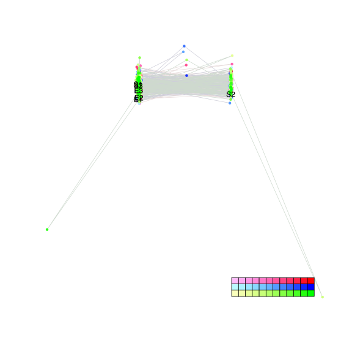
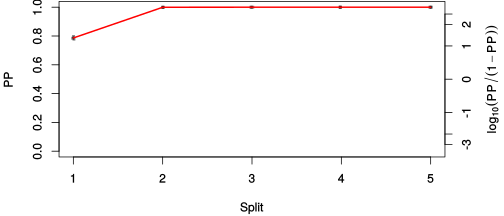
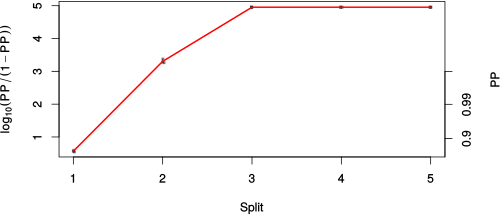

| chain # | burnin | subsample | Iterations (remaining) | command line | subdirectory | directory |
|---|---|---|---|---|---|---|
| 1 | 10000 | 1 | 90000 | bali-phy E1_AA_red3_v2_Alpha_Manatees.fas -s 93984 -n Alpha_Manatees_c1 | Alpha_Manatees_c1-1 | /DATA/work/ONCOGENEVOL/database/trees/Bali-Phy/E1 |
| 2 | 10000 | 1 | 90000 | bali-phy E1_AA_red3_v2_Alpha_Manatees.fas -s 90327 -n Alpha_Manatees_c2 | Alpha_Manatees_c2-1 | /DATA/work/ONCOGENEVOL/database/trees/Bali-Phy/E1 |
| 3 | 10000 | 1 | 90000 | bali-phy E1_AA_red3_v2_Alpha_Manatees.fas -s 32665 -n Alpha_Manatees_c3 | Alpha_Manatees_c3-1 | /DATA/work/ONCOGENEVOL/database/trees/Bali-Phy/E1 |
| P(data|M) = -9412.421 +- 1.014 | Complete sample: 6 topologies | 95% Bayesian credible interval: 2 topologies |

Phylogeny Distribution

| Partition support: Summary |
| Partition support graph: SVG |
| 50% consensus | Newick (+PP) | SVG | |||||
| 66% consensus | Newick (+PP) | SVG | |||||
| 80% consensus | Newick (+PP) | SVG | |||||
| 90% consensus | Newick (+PP) | SVG | |||||
| 95% consensus | Newick (+PP) | SVG | |||||
| 99% consensus | Newick (+PP) | SVG | |||||
| 100% consensus | Newick (+PP) | SVG | |||||
| MAP | Newick (+PP) | SVG | |||||
| greedy | Newick (+PP) | SVG |
{kind=link}
{kind=link}
{kind=link}
{kind=link}
{kind=link}
{kind=link}
{kind=link}
{kind=link}
Alignment Distribution
Partition 1
| Diff | Min. %identity | # Sites | Constant | Informative | ||||
|---|---|---|---|---|---|---|---|---|
| Initial | FASTA | HTML | Diff | 4.39% | 660 | 1 (0.152%) | 320 (48.5%) | |
| Best (WPD) | FASTA | HTML | AU | 37.3% | 849 | 122 (14.4%) | 331 (39%) |


Mixing
| burnin (scalar) | ESS (scalar) | ESS (partition) | ASDSF | MSDSF | PSRF-CI80% | PSRF-RCF |
|---|---|---|---|---|---|---|
| 1806 | 1201 | 785.058 | 0.003 | 0.009 | 1.001 | 1.013 |
Projection of RF distances for the first 3 chains3D | Variation of split PPs across chains |
Scalar variables
| Statistic | Median | 95% BCI | ACT | ESS | burnin | PSRF-CI80% | PSRF-RCF |
|---|---|---|---|---|---|---|---|
| prior | -665.6 | (-739.2, -597.3) | 192.3 | 1404 | 1285 | 1.001 | 1.003 |
| prior_A1 | -654.1 | (-727.6, -587.6) | 195.2 | 1383 | 963 | 1 | 1.005 |
| likelihood | -9361 | (-9408, -9313) | 145 | 1862 | 414 | 1 | 1.004 |
| logp | -1.003e+04 | (-1.007e+04, -9983) | 179.7 | 1502 | 654 | 1.001 | 1.009 |
| Heat.beta | 1 | ||||||
| Scale1 | 2.857 | (1.339, 5.259) | 1 | 270003 | 125 | 0.9997 | 0.9989 |
| S1.F.pi.A | 0.07145 | (0.06139, 0.08186) | 8.073 | 33446 | 177 | 0.9993 | 0.9972 |
| S1.F.pi.R | 0.04879 | (0.04033, 0.05777) | 9.077 | 29747 | 801 | 1 | 1.004 |
| S1.F.pi.N | 0.03681 | (0.03025, 0.04393) | 11.31 | 23865 | 577 | 1 | 1.003 |
| S1.F.pi.D | 0.06172 | (0.05215, 0.07185) | 8.756 | 30836 | 155 | 0.9998 | 0.9983 |
| S1.F.pi.C | 0.04935 | (0.03923, 0.06015) | 8.551 | 31575 | 556 | 0.9998 | 0.9995 |
| S1.F.pi.Q | 0.04691 | (0.03918, 0.05484) | 8.348 | 32343 | 148 | 1 | 1.001 |
| S1.F.pi.E | 0.0629 | (0.05359, 0.07228) | 14.76 | 18294 | 387 | 1 | 0.9967 |
| S1.F.pi.G | 0.08458 | (0.07159, 0.0988) | 14.12 | 19117 | 478 | 1 | 0.9994 |
| S1.F.pi.H | 0.02335 | (0.01778, 0.02929) | 8.222 | 32839 | 395 | 0.9998 | 0.9958 |
| S1.F.pi.I | 0.04289 | (0.03519, 0.05135) | 8.27 | 32648 | 365 | 0.9998 | 1.001 |
| S1.F.pi.L | 0.09328 | (0.08068, 0.1067) | 8.689 | 31073 | 313 | 1 | 1.002 |
| S1.F.pi.K | 0.04246 | (0.03481, 0.0503) | 7.96 | 33921 | 284 | 1 | 1.002 |
| S1.F.pi.M | 0.01815 | (0.01337, 0.02334) | 8.097 | 33345 | 709 | 0.9999 | 0.9984 |
| S1.F.pi.F | 0.03405 | (0.0262, 0.04229) | 8.031 | 33618 | 258 | 1 | 0.9931 |
| S1.F.pi.P | 0.0422 | (0.03313, 0.05157) | 8.706 | 31012 | 259 | 1 | 1.007 |
| S1.F.pi.S | 0.06704 | (0.0574, 0.0767) | 10.66 | 25318 | 477 | 1 | 0.9961 |
| S1.F.pi.T | 0.06914 | (0.05953, 0.07925) | 8.26 | 32687 | 839 | 1 | 0.998 |
| S1.F.pi.W | 0.01391 | (0.008751, 0.01987) | 7.915 | 34112 | 282 | 1 | 0.9993 |
| S1.F.pi.Y | 0.02427 | (0.01796, 0.03115) | 8.677 | 31116 | 420 | 0.9999 | 0.9942 |
| S1.F.pi.V | 0.06417 | (0.05434, 0.07428) | 9.044 | 29852 | 666 | 0.9999 | 0.9979 |
| I1.RS07.meanIndelLengthMinus1 | 3.195 | (2.118, 4.483) | 61.78 | 4370 | 373 | 0.9999 | 0.9997 |
| I1.RS07.logLambda | -3.926 | (-4.184, -3.66) | 35.56 | 7593 | 168 | 1 | 1.002 |
| |A1| | 805 | (764, 842) | 224.8 | 1200 | 1768 | 0.974 | 1.013 |
| #indels1 | 77 | (67, 86) | 185.2 | 1457 | 430 | 0.9167 | 1.003 |
| |indels1| | 322 | (251, 399) | 158.3 | 1705 | 416 | 0.9864 | 1.004 |
| #substs1 | 1534 | (1498, 1564) | 152 | 1776 | 1806 | 0.9767 | 1.012 |
| Scale1*|T| | 3.171 | (2.986, 3.356) | 16.19 | 16674 | 80 | 1 | 0.9995 |
| |A| | 805 | (764, 842) | 224.8 | 1200 | 1768 | 0.974 | 1.013 |
| #indels | 77 | (67, 86) | 185.2 | 1457 | 430 | 0.9167 | 1.003 |
| |indels| | 322 | (251, 399) | 158.3 | 1705 | 416 | 0.9864 | 1.004 |
| #substs | 1534 | (1498, 1564) | 152 | 1776 | 1806 | 0.9767 | 1.012 |
| |T| | 1.109 | (0.4832, 1.925) | 1 | 270003 | 120 | 1 | 0.9992 |